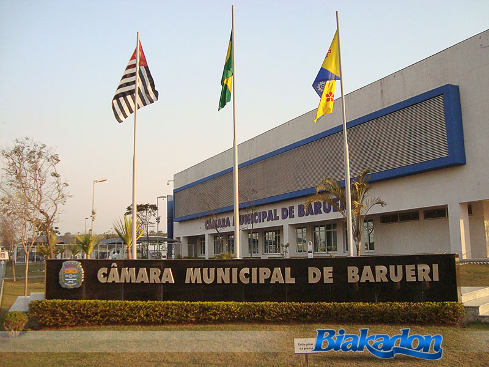
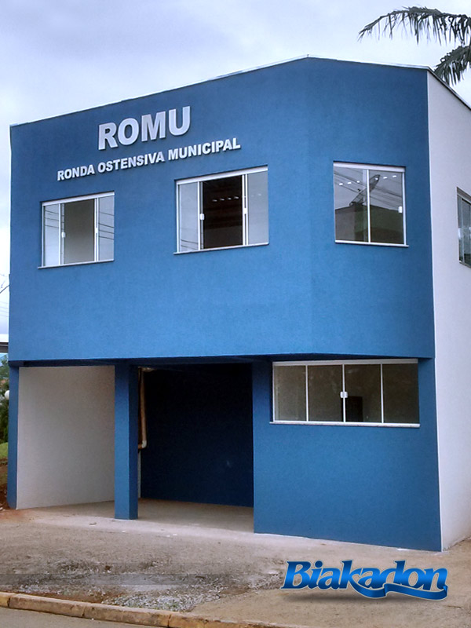
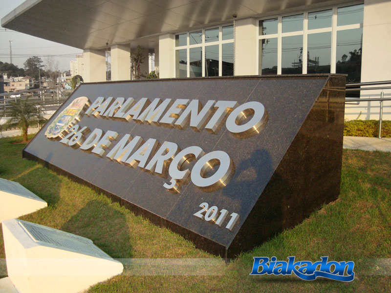

Você está procurando uma solução eficaz e com um ótimo custo benefício para tornar a imagem da sua empresa ainda mais marcante?
Então você acaba de encontrar, uma ótima opção de sinalização e decoração para ambientes é a Letra caixa (conhecida também por letra-bloco ou letra 3D) é uma das soluções mais conhecidas em comunicação visual e uma das opções mais sofisticadas e requintadas tanto para ambientes externos ou internos.
O efeito tridimensional torna a letra caixa uma excelente solução na decoração e/ou sinalização dos mais variados espaços, pois além de palavras ou frases ela pode ser utilizada para a criação de ícones e símbolos como por exemplo sua logomarca (logo em letra caixa ou logo em letra bloco).
Veja alguns exemplos de Letras em alto relevo.

Logotipo 3D
Logomarca produzida com letra caixa decoradas com vinil adesivo com impressão digital (o uso do adesivo possibilita a reprodução fiel das cores da logomarca).
- 
Letra de aço inox polido - Câmara de Barueri
Brasão e texto em letra caixa produzidos com chapa de aço inox polido, com corrosão e aplicação de cores com pintura automotiva no brasão.
- 
Letreiro para fachada- Fachada ROMU
Aplicação de letra caixa de chapa de aço galvanizada com pintura automotiva.
- 
Letra caixa de aço inox polido - Câmara de Barueri
Brasão e texto em letra caixa produzidos com chapa de aço inox polido, com corrosão e aplicação de cores com pintura automotiva no brasão.
Onde posso utilizar a letra caixa?
Existe uma grande variedade nos tipos de acabamento e materiais que podem ser usados na produção de uma letra caixa, o que a torna um produto muito versátil e pode ser colocada nos mais variados ambientes, com por exemplo:
- Letreiros em fachada de loja
- Logo 3D para recepção
- Decoração de lojas
- Igrejas
- Escolas
- Pictogramas para sinalizaçãode ambientes
- Placas e painéis
- Decoração de escritórios
- Decoração de casas
Com quais materiais a letra caixa é produzida?
Letra de MDF
O MDF é um material derivado da madeira, por esse motivo indicada para utilização em ambientes internos, mas pode ser utilizada em áreas externas se estiver protegida dos intempéries da natureza.
Letra de PVC
Sua superfície proporciona um ótimo acabamento. Tem uma alta resistência aliada a uma baixa densidade o que o torna um material leve. Pode ser utilizado para letreiros internos ou externos.
Letra de Acrílico
O Acrílico é um material nobre, leve e muito resistente, tem um acabamento brilhante e também podem ser decorados com adesivo. As letras de acrílico podem ser utilizadas em áreas internas ou externas.
Letra caixa de aço inox escovado
Possui grande durabilidade ao longo do tempo e os menores custos de manutenção, é um material sustentável pois o reaproveitamento do material não altera sua qualidade, é 100% reciclável.
Letra caixa de aço inox polido
Basicamente a única coisa que difere o aço escovado do polido é o seu acabamento, no processo de polimento o material ganha um aspecto espelhado e brilhante.
Letra caixa de aço galvanizado
A Galvanização do aço o proteje contra corrosão, sendo assim as letras de aço galvanizado podem ser usadas tanto em ambientes externos (ex. Letreiros e placas) como na recepção de uma empresa.
Letra caixa de latão polido
O latão quando polido também ganha esse aspecto espelhado / brilhante que cria um grande apelo visual e é muito resistente mesmo em ambientes externos